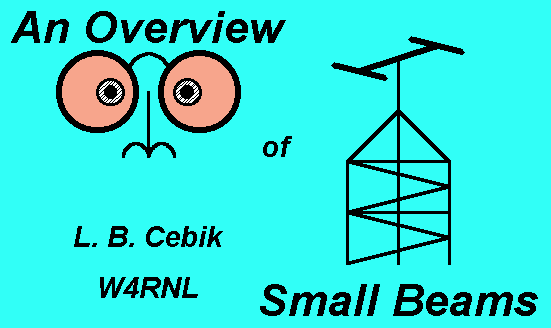
Coils, Linear Loads, and Capacity Hats:
An Overview of Small Loaded Yagis
This talk, originally prepared for the 1996 FDIM Symposium in Dayton, summarizes material drawn from the studies called "Modeling and Understanding Small Beams," which appeared in eight installments in Communications Quarterly.

Many QRPers and other hams operate within limited spaces. Others simply do not want to erect or maintain full-size beams that span 35' or more on 20 meters. So there will always be interest in shrunken beams and other arrays.
In this overview of small, 2-element Yagis, we shall compare the modeled performance of several size-reduction schemes, otherwise known as loaded elements. First, however, we need to look at the general performance of shortened radiators relative to resonant dipoles for a given frequency. How short does it make sense to go? If we know the answer to that question, we can then ask what is the best way to get there.
Inductive or coil loading is the most familiar form of element shortening, and placing the coils at the element centers is mechanically most convenient. However, we can replace the coils with linear loads, which are nothing more than shorted transmission line stubs. Finally, we can "load" the other end of the element with a capacity hat. For orientation, Figure 1 shows each of these options applied to dipoles elements. Each scheme has certain advantages and disadvantages that I shall try to lay out so you can select your own preference.
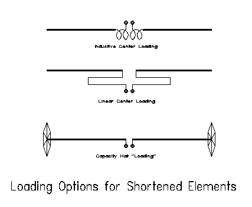
How Short Should I Go?
Everything Yagi begins with the half wavelength dipole. As the dipole goes, so goes the beam. So our first question is what happens when we shorten a dipole by loading it. Answers are not hard to come by if you do a little systematic antenna modeling with one of the numerous Method-of- Moments programs available. For our purposes, either MININEC or NEC will do, since we shall not come close to violating their limitations. Those unfamiliar with these programs should understand that when used within their limitations, they are exceptionally accurate, well beyond the abilities of home-built antennas to test.1
We shall look first at center-loaded dipoles with inductive loads. Moving the inductors outward, up to about the middle of each quarter wave leg of the dipole, can improve performance, but somewhat marginally. For center- loaded dipoles, the element gain is a function of two factors: element length and load Q. Figure 2 is a graph of dipole gain in dBi in free space of shortened, loaded dipoles compared to a full size dipole at 10 meters (28.5 MHz). Virtually identical figures emerge at other frequencies by shortening the element by an equal percentage.
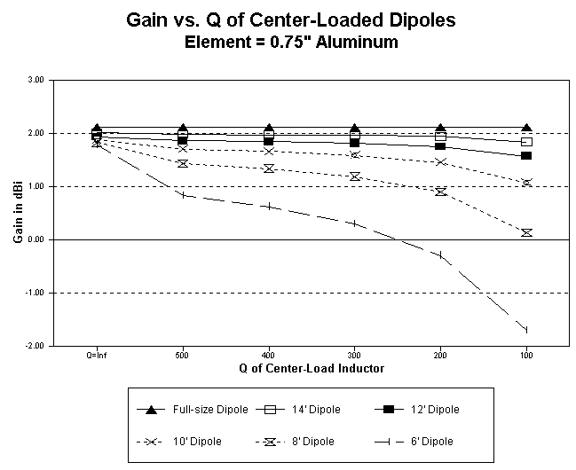
A full size dipole for 10 meters is just over 16' long. That makes shortening in 2' increments a handy gauge of performance. If we assume a lossless load, needed to compensate for the shortened length, we uncover the amount of loss in gain directly attributable to element shortening. Although the graph does not make the loss of gain look serious, there is about a 15% loss between the full size element and the exceptionally short 6' element. In contrast, the 12' element, about 3/4ths full-size, losses only about 9% gain.
However, no load is without some resistive loss: hence, the rest of the graph. The moment we assign a value of Q, the load's reactance divided by its heating resistance, differentials among the shortened elements grow more pronounced. Even at the unrealistic Q-value of 500, losses in the 6-, 8-, and 10-foot elements grow serious.
Do not overestimate the Q you may maintain in an antenna loading element, whether it is a coil or a linear load. Hypothetically, you might calculate Q's up to 300 for leadless coils of optimal length-to-diameter ratios of fresh, clean materials. When you add leads, connectors, and-- especially--the action of the chemical soup we call our atmosphere, you will rarely achieve Qs above 100 in antenna coils. Even a perfect coil will weather down to that Q very quickly after you place the antenna in the air. Physically modeled linear-loading elements have Qs from about 300 to over 1000, and they are nothing more or less than the touted ultra-low-loss transmission-line sections. However, realizing very high Qs in linear loads is a complex and somewhat tricky business. So be very conservative in your estimates of inductor Q for antenna loads.
In terms of our graph, conservativism means going to the right-hand edge of the graph. Here we find a break in the gain-efficiency of our shortened dipole between the 10' and 12' models, 5/8ths and 3/4ths normal length respectively. That break coincides with longstanding broadcast antenna engineering rules of thumb that use 60 degrees electrical length (2/3rds resonant length) for verticals as the break-point between acceptable and unacceptable efficiency.2
What kind of load and where we put it do make some difference in the performance of a dipole element and any Yagi we make from such dipoles. Figure 3 gives us a basis for comparing short dipoles (12' long) using center loads, mid-element loads, and capacity hats. The strength of the electrical field is a function of the current along the element, which, for a dipole, is highest at the center or feedpoint and lowest at the element ends. The figure provide current levels in a 10-meter dipole with center loading (Q=300), mid-element loading (same Q) and capacitive hat "loading." All main elements are 0.75" diameter aluminum.
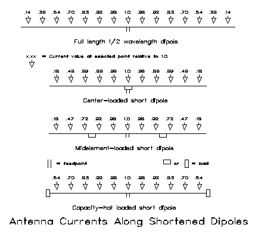
Compared to the full-size dipole, the two inductively-loaded antennas display sharp current drops beyond the loading point, in essence, the missing antenna segment made up for by the coil. The free space gain of the midelement-loaded dipole is only marginally better than that of the center-loaded dipole: 1.84 dBi vs. 1.82 dBi. The free space gain of the full-size dipole is 2.13 dBi. Interestingly, the capacity-hat loaded dipole shows a free space gain of 2.03 dBi. However, notice that the current along the capacity-hat element parallels the values for the full-size dipole right up to the hat itself. The nonradiating structure at the end of the antenna uses only the lowest levels of antenna current. The other loads are placed in high-current regions of the element, but yield insignificant radiation in the tight fields of the coils.
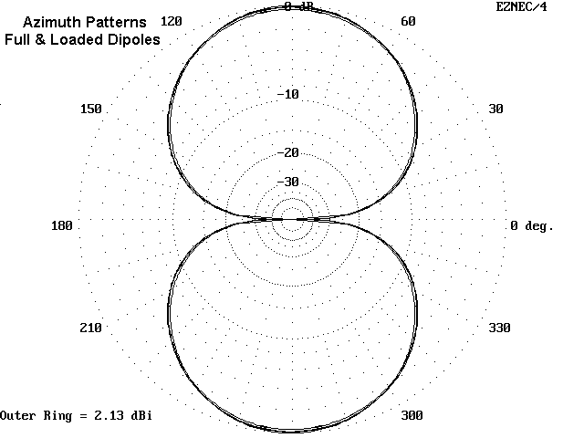
For reference, Figure 4 provides free-space azimuth patterns for a full-size dipole, along with 12' capacity hat, midelement-loaded, and center-loaded dipoles, working downward in gain. The pattern differences are so slight that any of the 4 would make a working dipole. However, those differences will have a significant effect upon Yagis that use them.
The feedpoint impedance of a shortened dipole will affect the feedpoint impedance of any Yagi in which it is used. A full-size 2-element Yagi has a feedpoint impedance of approximately 35 ohms, depending upon design, using a full size dipole with a natural impedance of about 72 ohms. A 12' center-loaded dipole has a feedpoint impedance of about 32 ohms, while a 12' midelement-loaded dipole's feedpoint is about 44 ohms. The feedpoint impedance of a capacity hat dipole of the same length is nearly 60 ohms. Consequently, expect 2-element Yagis using inductive loading to have lower feedpoint impedances (10-20 ohms) compared to Yagis using capacity-hat elements (30 ohms).
Let me add a word about helical elements. A helical element is a continuous coil, like a slinky, wound in one direction, and fed in the middle. It radiates well because the turns are spread apart and the field is not as self-enclosed as with a normal coil. I have modeled a few, using simplified geometry (square and hexagonal turns). They perform well so long as the turns are not overly compressed. An 11 and a half foot model dipole of 12 turns with a 6" diameter provided 1.94 dBi free space gain and a resonant feedpoint impedance of about 38 ohms. However, do not expect such performance if you wind the coil over a support structure, such as PVC. PVC is a fairly good RF performer at HF for small lengths and supports, but it is not air, and it will reduce inductor Q. Moreover, using smaller turns and more of them will reduce gain. Compressing turns to further shorten the antenna element will begin to reduce gain radically, as the antenna begins to act more like a coil than a linear element. In the end, helical elements may be more trouble than they are worth in Yagi applications.
The upshot of this investigation is a series of recommendations:
-
1. Wherever possible, use elements at least 2/3rds normal resonant length.
-
2. Mid-element loading provides such a small improvement over center loading that the choice should be made on grounds of mechanical factors, such as ease of construction and durability.
-
3. Capacity-hat loading is a viable alternative to inductive loading for dipoles and Yagi elements in a monoband beam.
-
4. For center-loaded dipoles and beams, consider linear-loading as a higher-Q option to center loading coils.
Remember that these are ideal recommendations: local circumstances may always dictate that you violate one or more of them.
Center-loaded Yagis: Coils or Linear Loads?
We have spent nearly half our time on dipoles, because understanding dipole performance is 90% of the game of understanding Yagi performance. Proof of this is in the following rule of thumb: if he driven element Q goes down, gain decreases; if the reflector Q goes down, front-to-back ratio decreases. Using this rule backwards is a guide to trouble shooting your antenna. If your gain is down, look for problems in the driven element (or directors, if you can afford them); if the front-to-back ratio goes down, look for the problem in your reflector. If all else fails, check your feedline.
90% of the rest of the game is understanding full-size Yagi performance. So let's begin with a simple 2-element, driven element and reflector, Yagi. Again, figures are for 10 meters, but you scale them up to 20 or down to 6 with fair ease and reliability.
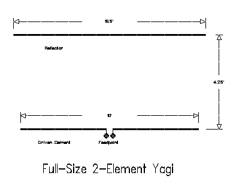
Figure 5 provides the dimensions of the antenna I shall use as a standard. A 16' driver and a 16.5' reflector are 4.25' apart, using 3/4" diameter aluminum. The antenna shows a balance between gain and front-to-back ratio. You can squeeze more of one or the other out of the antenna, but not both. The feedpoint impedance is quite reasonable at about 30 ohms, and a beta match or a gamma match works well. I prefer to reserve the gamma match for all metal construction and use the beta match for insulated feedpoints.3 The latter are common in center-loaded construction, so we shall specify them, but without bias against the gamma match.
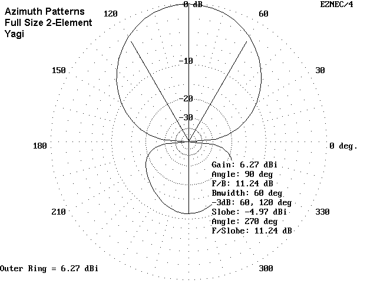
Figure 6 gives an idea of performance, referenced to free space. The gain over a dipole in free space is about 4.1 dB, and the front-to-back ratio of about 11+ dB is 2 S-units. Nothing stellar here, but it is a good antenna for round tables, contests, and the like, where you want to suppress QRM but do not want to totally miss contact with someone behind you.
We can shorten the elements of this antenna to about 11.6' and 12.16' respectively for the driven element and reflector, while retaining the same spacing. All we need to do is place high-Q inductors at the center of each element. Of course, we shall have to insulate the elements from the boom (unless the boom is PVC), and we shall also have to split the driven element coil at the center for the matching and feed network. All this is shown in Figure 7.
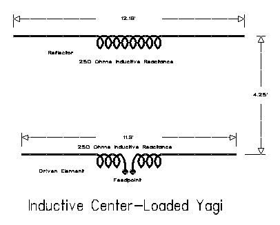
What do we get for our pains? A very usable antenna, as shown in Figure 8. Let us assume that weather and other factors have set the loading coil Q at 100. We shall have lost about 1 dB of gain overall from coil losses and shorter elements. However, we do gain in the front-to-back ratio department by almost a full S-unit (6-dB). In fact, you can play with the reflector and achieve something over 20 dB front-to-back ratio for outstanding rejection of QRM. However, these figures come at a cost.
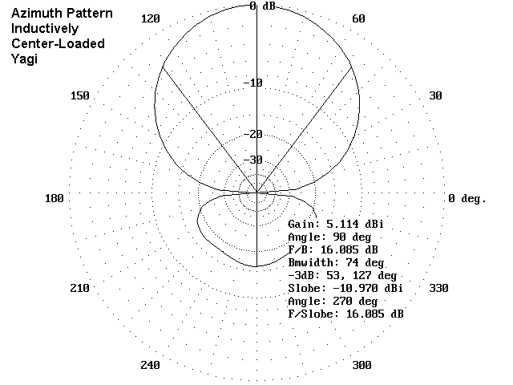
The first cost is a low feedpoint impedance. The full size 2-element Yagi had a feedpoint impedance of 30 ohms, while the center-loaded version is down to 20 ohms. Increasing the front-to-back ratio further lowers the feedpoint impedance to below 10 ohms. Maintaining a good efficiency, reflected in the ratio of feedpoint impedance to loss resistance, becomes very difficult at very low feedpoint impedances. A 1-ohm loss at a 50-ohm feedpoint impedance is about a 2% loss. When the feedpoint impedance hit 10 ohms, that 1-ohm loss consumes 10% of your power.
There is a lower-loss alternative to loading coils. It is the linear load that for a long time has simply not been understood in ham circles.4 A linear load is a simply a pair of inductive (shorted) transmission-line segments. Shorted transmission line lengths less than a quarter wavelength show inductive reactance. We can precisely calculate the length of line of any construction needed for a given reactance at any frequency. There is a program in George Murphy's HAMCALC that does precisely this job.5 We place two lines, each with half the overall required inductive reactance under each element and throw away the coils.
The center loading coil required for our model antenna showed about 248 ohms for each element. Each transmission line will have about 124 ohms reactance. #12 wire spaced about 1.25" in a long hairpin will provide the required reactance if it about 1.6' long each side of center. Figure 9 shows 2 possible layouts for linear loads. What has probably kept linear loading in a state of confusion is that the symmetrical triangular system--where the effects of the antenna's radiation apply equally to both wires of the linear load--is the only one where the length can be calculated reliably from standard transmission-line formulas.6
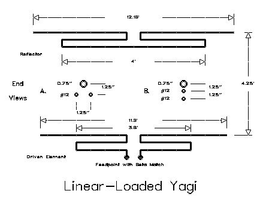
The flat-plane layout, which is often mechanically handier, especially for field antennas, is not quite a true transmission line. The radiation from the antenna affects each line slightly differently so that currents are not equal and opposite at corresponding points on the line. That, in turn, makes the line radiate as part of the antenna. The bottom line is that the linear load needs to be a bit longer to do its work--close to 2' each side of center. Figure 10 shows a graph of modeled lengths for a 12' 3/4" diameter aluminum element and flat-plane linear loads of #12 and other size conductors.
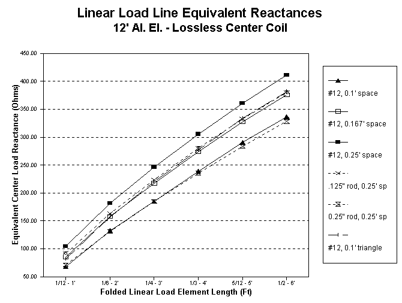
As a side side note, if we move the linear load sections outward--toward midelement loading points--we encounter a second unbalancing force that operates even if we use great care in placing the linear load lines in a symmetrical arrangement with the main element. Near the element center, current levels change very slowly, so that the small space between one terminal of the load and the other terminal of the load show almost identical current levels. Farther out the element, the current level changes more rapidly so the a small space can show a much larger current difference. Hence, even symmetrically built lines will show significant current imbalance. This imbalance, in turn, disrupts easy calculation of the line length and makes empirical experimentation necessary.
The final dimensions for my test antenna using a flat-plane are shown on Figure 9. I used the same old 11.6' and 12.16' 3/4" diameter aluminum elements spaced 4.25' apart. The linear loads are #12 wire evenly spaced below the main element in 1.25" increments. The reflector linear load (actually load pair) is 4' long, while the driver load is 3.8' long total. Note that the driven element linear load has been shortened to let the element show a capacitive reactance, necessary to permit the use of a beta match. Contrary to a gamma match, where we purposely lengthen the element to make it appear inductive, with a beta match, we shorten it to provide a built-in series capacitive reactance. Then a coil across the feedpoint provides the parallel inductive reactance necessary to complete our L-circuit matching system. Standard L-circuit formulas apply to this matching system. You can replace the small beta-match coil with a shorted piece of transmission line and you have what has been dubbed the "hairpin" match. Figure 11 compares our usual picture of an L-network matching a higher source resistance to a lower load resistance to the situation when it is used with an antenna.
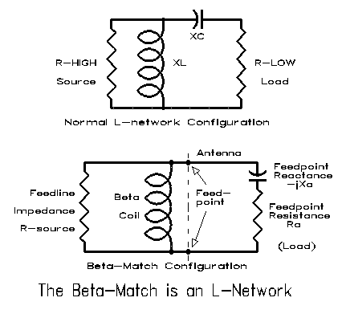
The linear-loaded version of our center-loaded antenna is equivalent to raising the Q of the center load to a reliable and durable value of 300. Gain is improved by about 2/3rds of a dB, closer to the gain of a full size Yagi, and the front-to-back ratio is improved for any given value of reactance chosen for the reflector. Although the test antenna sacrificed a little front-to-back ratio for the sake of a higherr feedpoint impedance (about 20 ohms), 20 dB front-to-back ratios with feedpoint impedances above 15 ohms are not hard to achieve or hard to match with the beta match scheme. Figure 12 compares the free space azimuth patterns of the inductive and linear load version of the center-loaded antenna.
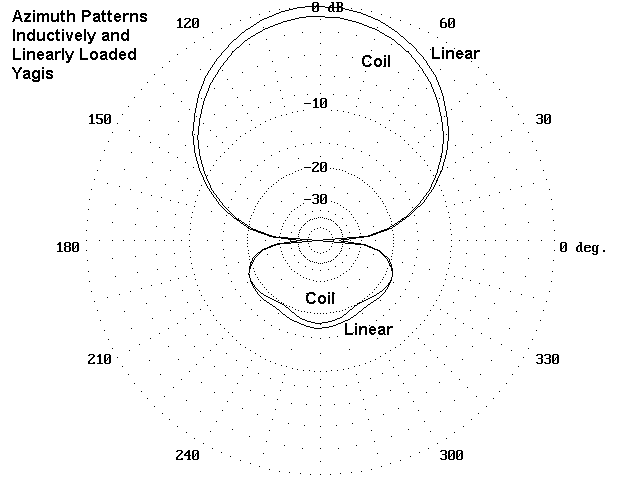
We mentioned one cost of center loading (whether one uses coils or linear loads): lower feedpoint impedance. There is a second cost: narrower SWR bandwidth. Figure 13 compares the SWR bandwidths of a full-size Yagi with our three-quarter size center- loaded version. Curves for center inductors and for linear loads are insignificantly different, so read the second line up as covering both for all practical purposes. The third or top line gives the SWR bandwidth for a modeled version of the loaded antenna using 8' elements. Such antennas are both possible and, in some cases, necessary. However, be aware that you lose more than bandwidth with them. If we arbitrarily allow the center load Q to be 300, the gain will decrease to less than 4.5 dBi. If a center inductor has, after weathering, a Q of 100, the gain is barely more than that of a dipole, about 2.5 dBi. However, such antennas do offer signal and QRM discrimination, with front-to-back ratios approaching 18 to 20 dB. A half-size 2-element, linearly-loaded Yagi for 40 meters may be a very good antenna indeed, compared to whatever else is available. However, do not shorten the required 17-20' boom (four times the length of the 10-meter model), or you will lose even this performance.
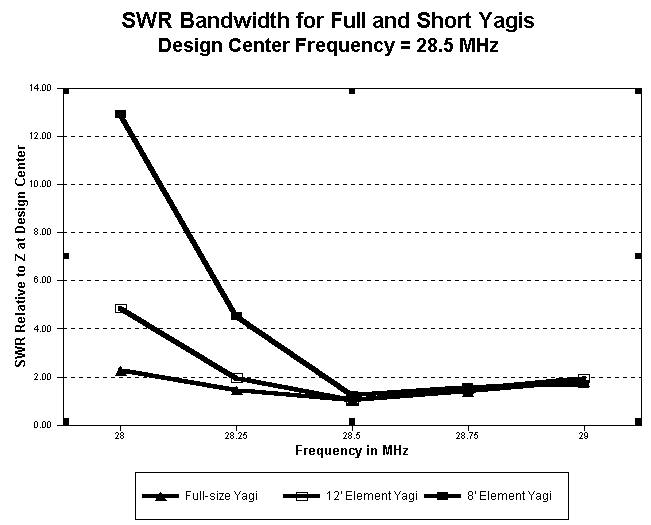
The differences in inductively-loaded and linear-loaded antennas of the same physical dimensions are not overwhelmingly great, even if noticeable. Construction and maintenance considerations may well dictate which version you build. For 10 meters, a strip of 3/8" thick plywood, coated for weather protection, makes a good insulated element base. Suspend the element and the linear load below the plate, using strips from 4" square freezer boxes as a good weather-resistant set of insulators. A 5' section of 1 1/4" diameter nominal Schedule 40 PVC makes a good boom. Alternatively, you can run half-inch nominal PVC through holes cut in the ends of the PVC boom. PVC glue will weld the pieces together. With just a bit of tape wrapped around the smaller PVC, 1" diameter aluminum tubing with fit tightly over the PVC. With this construction, you can also mount coil sections over the smaller PVC and come up with a durable inductive center load. Obviously, for 20 meters, you will need hardier construction methods.
Capacity Hats
We have not exhausted the means of shortening antenna elements and still maintaining fairly efficient performance. It is time to tip our capacity hats. Unfortunately, capacity hats are ill-understood in much of the ham literature. Often thought of solely in the context of vertical antennas, they can be useful for horizontal antennas and even for quad loops.
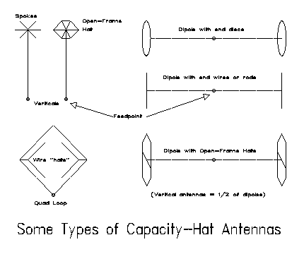
Figure 14 shows some variations on the capacity hat applied to different types of elements. If nothing else shows up, the symmetry of hat constructions does. It is there for good reason.
We can look at hats from two points of view, but only if we are willing to keep them well-separated. First, we can look at them as physical structures that permit current flow. If we start with a shortened main element, the hat structure completes the length needed by the antenna current at some given frequency to reach zero while the antenna is resonant. What makes the hat different from the main element is that its symmetrical construction yields no radiation, since the currents in the various legs cancel each other out in terms of field generation.
Now let's take a different look at the same antenna. From this perspective, each leg of a shortened dipole is like a shortened quarter wave vertical. We can look at it as if it were a single-wire transmission line. The antenna (minus the hat) will have a certain length-to-diameter ratio which determines its average characteristic impedance. Since it is short, as Figure 15 suggests, we can lengthen it to a resonant length, or we can add to the end away from the feedpoint the missing capacitive reactance in the form of a nonradiating "stub." That stub is the capacity hat, so named because of its function to add capacitive reactance to the far end of the antenna element.
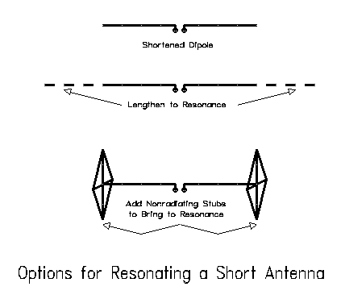
There is an old technique of calculating the size of the hat needed by any given shortened element at any given frequency. Unfortunately, it is not particularly accurate above 80 meters. First, it was generated for very thin wire antennas that approximate skinny conical sections of wire on which the theory is based. Above 80 meters, almost all ham antennas represent fat wires. Second, hat size has been predicated on the solid conductive disk with no thickness.7 Hams almost always use thick open- frame hats, which do not come close to approximating the disk. At low and very low frequencies, almost any antenna diameter is very thin and almost any hat material is of little thickness relative to the length of a wave of RF energy. But we HF hams have to live with being both fat and thick-- antenna-wise, at least.
One can construct a series of ad hoc correctives to the classical calculations and come up with reasonable approximations of hat size, close enough to start experimental construction. In fact, HAMCALC also contains a program designed to do this.8 However, an antenna modeling program is the final planning step before construction, since it treats hats as physical objects along which currents flow, a much more accurate method of calculation.
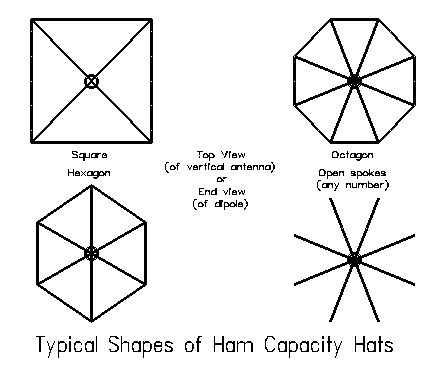
Typical ham hats come in two generic types: a series of spokes radiating from the element end and a closed version of those spokes that includes a perimeter wire. As Figure 16 shows, the major variants in these types of hats are the square, the hexagon, and the octagon. Hats have traditionally been applied to verticals, but they can be applied to 2- element Yagi construction with success. In fact, a dipole in free space is nothing more than a quarter-wave vertical and its modeled image: equal antenna leg lengths call for the same size hats, except that a dipole requires one on each end.
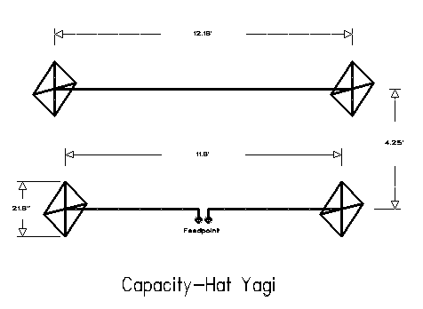
Figure 17 shows the dimensions of a 10-meter capacity-hat Yagi I designed and built over the winter. It uses the same 11.6' and 12.16' elements spaced 4.25' apart that were used in center-loading experiments. For this band, the required square, perimeter-enclosed hats of #12 wire had spokes just over 10" long. Since the original elements were designed for equal center loading inductive reactance while giving the required Yagi driven element-to- reflector relationship for the 4.25' boom length, we should expect equal size driven element and reflector hats.9
If a 10-meter beam calls for a square with perimeter 20" fromt point to point (and correspondingly smaller hexagons and octagons), then a 20-meter Yagi, 3/4th's full size, would call for squares about 40" from point to point. This is not as radical a weight and wind load on the element end as one might at first sight believe. My thin #12 structure, soldered at the corners and hose-clamped in place at the element ends has withstood standard weather blasts with no ill-effects. The real question is whether we gain anything by going to capacity hats. The current distribution shown way back in Figure 3 suggests that we do.
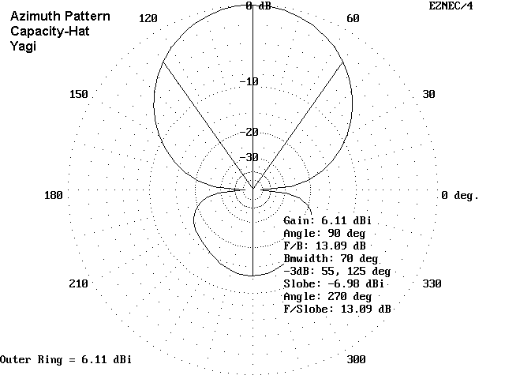
Figure 18 shows the azimuth pattern in free space of the 10-meter beam in question. Note that its gain and front-to-back ratio closely approximate those of the full size 2-element Yagi. The gain loss is insignificant in practical operating terms, and the front-to-back ratio is much the same. However, the capacity hat Yagi cannot approach the front- to-back ratio of the center-loaded antenna, which--of course, was purchased at the cost of a greater reduction of gain and much narrower SWR bandwidth.
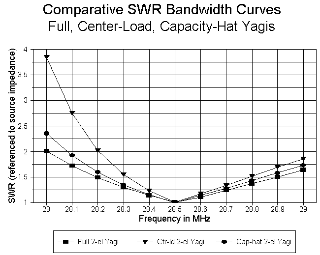
Figure 19 compares the SWR bandwidth of the full size antenna, the capacity hat model and the center-loaded models, all normalized to their inherent feedpoint impedances. The merits of the capacity-hat model in this respect show themselves clearly. In fact, the driven element of the capacity-hat Yagi shows a feedpoint impedance between 30 and 35 ohms, with remnant inductive reactance. A pair of series capacitors between the element connections and the coax connector cancels the inductive reactance and permits direct connection of 50-ohm coax with under 2:1 SWR over the first MHz of 10-meters.
The SWR bandwidth of an antenna does not just indicate the ease or difficulty of matching the antenna to a certain feedline. Narrow bandwidths usually indicate some other potential problems. In a Yagi antenna, maximum gain and maximum front-to-back ratio do not coincide at the same frequency. Maximum gain occurs at a lower frequency than maximum front-to-back ratio, and gain decreases steadily across the band. When the SWR bandwidth is wide, both maxima usually occur within the 2:1 SWR portion of the curve, and the gain decrease across the band is slow. When the SWR bandwidth is narrow, maximum gain may occur at a frequency of very high SWR, and the gain may decrease more rapidly across the band. Too, the front-to-back ratio, which may be high at the design center frequency, may deteriorate swiftly away from that frequency. Compared to center-loaded Yagis, the wider SWR bandwidth of the full-size and capacity hat Yagis is indicative of greater stability among other antenna properties.
Moreover, do not take SWR figures above an antenna's design center frequency too seriously. SWR figures below the antenna design center frequency are more indicative of antenna performance. Above design center, the SWR may remain low--or at least acceptable--but both the gain and front-to-back ratio may decrease to the point of making the antenna little better than a dipole.
Result: the capacity-hat 2-element Yagi is--or should be--a contender in your thinking about small beams for the small QRP city lot.
Summary
No one can make your antenna building decisions for you. Your specific situation has too many variables that only you can know and weight in the final summary. However, we can summarize some of the advantages and disadvantages of center-loaded and capacity-hat Yagis.
-
1. Center-loaded Yagis: These antennas have the disadvantage of lower gain and narrower SWR bandwidths. The latter is a problem on 20, 15, and 10, but not on 12 or 17 meters. They have some mechanical advantage in offering less wind loading and weight at element ends. They can also be tuned for high front-to-back ratios.
-
2. Linear-loaded Yagis: Similar to inductively-loaded Yagis in mechanical advantage, SWR bandwidth, and front-to-back ratio, linear-loaded Yagis have high gain figures due to a higher loading element Q.
-
3. Capacity-hat Yagis: Of all types of shortened Yagis, capacity hat models offer performance closest to a full size Yagi in terms of gain, SWR bandwidth, and front-to-back ratio (less than that of a center-loaded Yagi). Hats on the element ends can add to element stress and wind loading.
-
4. General: Shortened antennas with elements at least 2/3rds normal length offer good gain, good front-to-back ratios, and reasonable to good SWR bandwidths. When element lengths are less than 2/3rds normal, expect low gain and very narrow SWR bandwidths, although the front-to-back ratio can be sustained. It is unwise to use boom lengths less than 0.1 wavelength, with about 1/8th (0.125 - 0.16) wavelength preferable.
Although I have not tried the experiment, there is no reason why techniques cannot be combined. For example, I can imagine a 40 meter beam with half-normal element lengths that uses a combination of linear loading and capacity hats. When too long, linear loads can become loss factors, and without linear loading, the capacity hat might be very ungainly. A combination might yield smaller center loads and smaller hats, while still giving a little gain and good directionality across at least part of 40 meters.
In short, do not use my findings as gospel. Instead, model and experiment. The fun you have may be your own.
Notes
1. Among the most ready sources for NEC and MININEC are the following: a. Roy Lewallen, W7EL, for ELNEC (MININEC) and EZNEC (NEC-2); b. Brian Beezley, K6STI, for AO (MININEC) and NEC/Wires (NEC-2); and c. Nittany Scientific, Inc. for NEC-Win Basic (NEC-2). The W7EL and K6STI programs are DOS, while NEC-Win is for Windows. For an introduction to programming with MININEC, see "A Beginner's Guide to Using Computer Antenna Modeling Programs," pp. 10-17, and Roy Lewallen, "MININEC: The Other Edge of the Sword," pp. 18-22, both in Vertical Antenna Classics, ed. Robert Schetgen, KU7G (Newington: ARRL, 1995). (Note: all articles and programs without an author reference are by the author of this paper.)
2. Walter Schulz, K3OQF, "Designing a Vertical Antenna," QST (September, 1978), 19-21, reprinted in Vertical Antenna Classics, pp. 7-9.
3. For information on the beta or hairpin match, see recent editions of The ARRL Antenna Book, pp. pp 26-21 to 26-23; "The Hairpin Match: A Review," by Thomas Cefalo, Jr., WA1SPI, Communications Quarterly, Summer, 1994, pp. 49-54; and "Some Further Notes on the Beta Match," Communications Quarterly, Winter, 1995, pp. 51-52.
4. See, for example, the description of linear loading in The ARRL Antenna Book, and recent edition, pp. 6-7 to 6-8, where matters are left to "cut and try."
5. HAMCALC is available as free ware from George Murphy, VE3ERP, 77 McKenzie Street, Orillia, ONT, Canada L3V 6A6. Although the program may be shared freely, if you write Murph for the latest version, he asks a $5 donation to cover the costs of Canadian postage and disks. Any excess, he donates to a Canadian ham-related national charity. The program for calculating linear loads and other transmission line segments as reactances is call "Transmission Line Stubs." WA1SPI's program for beta matches is also in the collection under the title, "Hairpin Match for Yagi Antennas."
6. For further information on linear-loaded Yagis, see "Modeling and Understanding Small Beams, Part 4: Linear-Loaded Yagis," Communications Quarterly, Summer, 1996, 85-106.
7. For basic information on capacity hat theory and calculations, see the following: Walter Schulz, K3OQF, "Designing a Vertical Antenna." Schulz's graphs have been replaced by equations in recent editions of The ARRL Antenna Book, 17th Ed. (Newington: ARRL, 1994), p. 2-40. For additional treatments, see E. C. Jordan and K. G. Balmain, Electromagnetic Waves and Radiating Systems, 2nd Ed. (Englewood Cliffs: Prentice-Hall, 1968), pp. 384-88; R. C. Johnson, Antenna Engineering Handbook, 3rd Ed. (New York: McGraw-Hill, 1993), p. 24-8; or E. A. Laport, Radio Antenna Engineering (New York: McGraw-Hill, 1952), Chapter 1 ("Low Frequency Antennas"). Laport notes that even using these equations at low frequencies, we must be "contented" with approximations (p. 28). See also F. E. Terman, Radio Engineers' Handbook (New York: McGraw-Hill, 1943), p. 113. For an update with an extensive bibliography, see John S. Belrose, "VLF, LF, and MF Antennas," in Rudge, et al., Editors, Handbook of Antenna Design, Volume 2 (London: Peregrinus, 1983), pp. 553-662.
8. The HAMCALC program for this purpose is called "Capacity Hats."
9. For further information on capacity hats and this model antenna, see "Modeling and Understanding Small Beams, Part 8: Capacity Hats," Communications Quarterly, Fall, 1997, 61-79.
Also see the Antenna Modeling Programs page for more information.
Updated 1-17-98. © L. B. Cebik, W4RNL. Data may be used for personal purposes, but may not be reproduced for publication in print or any other medium without permission of the author.
 Return to Amateur Radio Page
Return to Amateur Radio Page